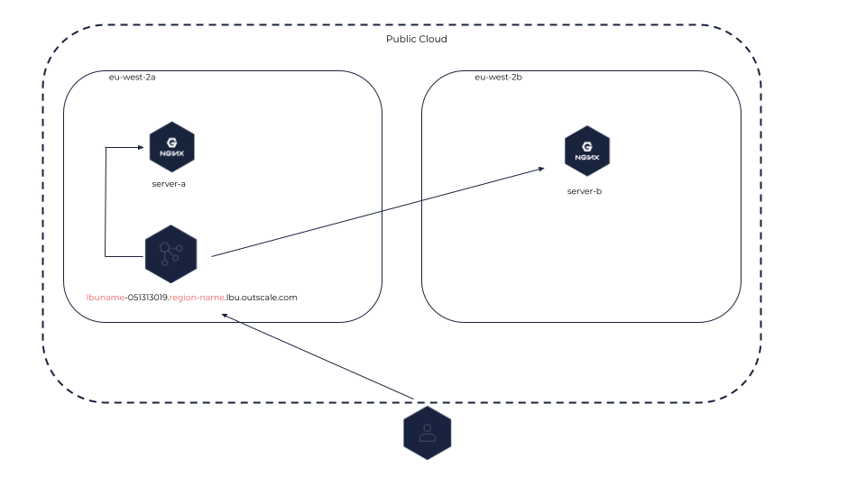
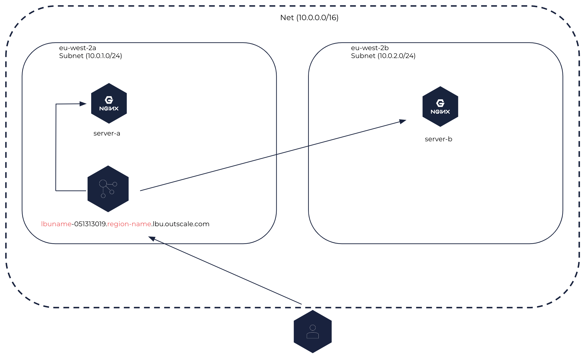
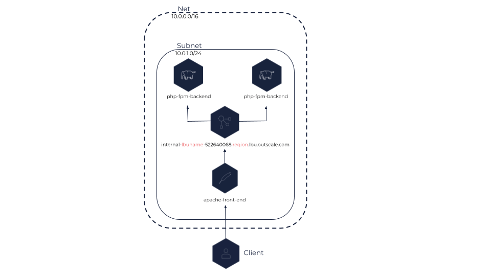

About Load Balancers
A load balancer distributes incoming network traffic between multiple virtual machines (VMs) of the public Cloud or of a Net to avoid overload and to improve the availability and reliability of your services.
You can:
-
Load balance using the TCP/SSL and HTTP/HTTPS protocols.
-
Distribute the load between several Subregions or Subnets.
-
Set up health checks to verify the status of each VM and send traffic only to the healthy ones.
General Information
Load Balancers and Backend VMs
The VMs registered with a load balancer are called backend VMs, or backends. You can register as many backend VMs as you need with a load balancer, and register or deregister backend VMs at any time depending on your needs.
|
Depending on its security group rules, a backend VM can receive either only the traffic coming from the load balancer or both the traffic coming from the load balancer and from elsewhere (another load balancer, directly from the internet, and so on).
Load balancers work in round-robin mode: frontend requests are evenly distributed to backend VMs. The number of frontend requests received by one backend VM corresponds to the total number of frontend requests divided by the total number of backend VMs.
The load balancer checks the health of backend VMs to determine the healthy ones that it can distribute the traffic to. For more information about health checks, see Configuring Health Checks.
|
You can configure only one type of health checks per load balancer, by specifying the protocol and port of backend VMs to check. We recommend creating one load balancer per service to avoid any undetected failure. |
Load Balancer Types
A load balancer can be either internet-facing or internal:
-
An internet-facing load balancer can be created in either the public Cloud or in a Net. This type of load balancer distributes inbound flows coming from the internet between its backend VMs that can be placed in different Subregions of a same Region or different Subnets of a same Net. This load balancer can be accessed through the internet.
Internet-facing Load Balancer in the Public Cloud
 |
Internet-facing Load Balancer in a Net
 |
-
An internal load balancer can only be created in a Net. This type of load balancer distributes the traffic between its backend VMs within one or more Subnets of the Net. This load balancer can only be accessed from within the CIDR of the Net.
Internal Load Balancer
 |
DNS Name
A DNS name is automatically assigned to each load balancer and is composed of the name of the load balancer and its endpoint (load-balancer-name.endpoint). This DNS name enables you to access your load balancer and send requests to it.
Internet-facing load balancers receive a public DNS name, while internal load balancers receive a private one.
|
Whether privately (in the Net) or publicly (on the internet), the DNS name of an internal load balancer is resolved to the private IP of the load balancer. |
Public IP
Public IPs are public IPv4 addresses that you can allocate to your account. You can associate public IPs with internet-facing load balancers only, either in the Public Cloud or in a Net.
Public IPs are owned either by 3DS OUTSCALE or by you, depending on what you specify when associating them.
The table below covers the different association behaviors when using the PublicIp parameter:
| OUTSCALE API method | public IP specification | Association behavior |
|---|---|---|
Specified |
The public IP you specify is associated with the internet-facing load balancer. |
|
Not specified |
A public IP owned by 3DS OUTSCALE is automatically created and associated with the internet-facing load balancer. |
|
Specified |
If the previous public IP is yours, it is disassociated. If the previous public IP is owned by 3DS OUTSCALE, it is deleted. |
|
Specified with an empty value |
If the previous public IP is yours, it is disassociated and replaced with a public IP owned by 3DS OUTSCALE. If the previous public IP is owned by 3DS OUTSCALE, it is kept and an error is returned. |
|
Not specified |
No change. |
|
Not required |
If the public IP is yours, it is disassociated. If the public IP is owned by 3DS OUTSCALE, it is deleted. |
For more information about public IPs, see About Public IPs.
Configuration
Listeners
Each load balancer must be created with a listener to be able to receive requests. A listener corresponds to the process handling the requests coming to the load balancer from the internet or from a corporate network, configured with a protocol and a port, using a port between 1 and 65535 both included.
You also configure the protocol and port to route traffic to backend VMs.
OUTSCALE load balancers support the HTTP/HTTPS and TCP/SSL protocols. Secure protocols are only supported between the client and the load balancer. The frontend and backend protocols must be on the same level, therefore:
-
If the frontend protocol is HTTP or HTTPS, the backend protocol must be HTTP.
-
If the frontend protocol is TCP or SSL, the backend protocol must be TCP.
The port number on which backend VMs are listening must be between 1 and 65535 both included.
|
You can also manage the behavior of a load balancer using listener rules. These rules enable you to redirect traffic to a specific backend VM based on a path in the URI of the request. For more information, see Creating a Listener Rule.
Sticky Sessions
By default, a load balancer distributes each network request independently, which means that two successive requests of the same user may be routed to two different backend VMs. However, you can use a sticky session policy to bind the user to the backend VM that handled the first request.
Sticky sessions work by creating a stickiness cookie with a specific duration. When the stickiness cookie expires, the sticky session is reset and the next request creates a new sticky session.
|
Sticky sessions can be configured for load balancers with HTTP and HTTPS listeners only. |
There are two types of sticky session policies:
-
Duration-based: The stickiness cookie has a specific time duration.
-
Application-controlled: The stickiness cookie has the same duration as a cookie of the backend VM.
|
If the backend VM that the user is bound to becomes unhealthy, the sticky session is reset among the remaining healthy VMs. The session is then stuck to another VM until the cookie expires, even if the original VM becomes healthy again. |
For more information, see Configuring Sticky Sessions for Your Load Balancers.
|
You can activate secure cookies on your load balancers. A secure cookie is a cookie that can only be emitted through HTTPS connections. For more information, see Modifying the Attributes of a Load Balancer. |
SSL Termination and SSL Passthrough
You can create a listener with an x509 SSL server certificate for a load balancer to enable encrypted traffic in SSL or HTTPS protocol between the client initiating SSL or HTTPS connections and the load balancer. x509 server certificates are delivered by a certification authority, and contain authentication information like a public key and the signature of the certification authority. This certificate is used by the load balancer to decrypt connection requests from this client, which are then forwarded to its registered backend VMs in the protocol of your choice (TCP or HTTP).
|
The certificate used by the load balancer for SSL termination can be replaced at any time. For more information, see Replacing the SSL Certificate Used by an HTTPS or SSL Load Balancer. |
SSL termination ensures the confidentiality of the communication between the client and the load balancer by checking the authentication information. The communication between your load balancer and its registered backend VMs is unencrypted and its security is ensured by the rules you add to the security groups of your backend VMs. You may need to use load balancers SSL termination for cases where you have to ensure confidentiality, for example, a website that requires a login and password authentication.
You can also forward HTTPS flows to backend VMs that have an SSL certificate using the TCP protocol. With this method, called SSL passthrough, the server certificate is uploaded on the backend VMs instead of the load balancer. The load balancer does not decrypt data flowing between the client and the backend VMs through TCP protocol.
For more information about how to configure load balancer listeners for load balancers with SSL termination or SSL passthrough, see Configuring a Load Balancer for SSL Termination or SSL Passthrough.
You can create the SSL or HTTPS listener when creating the load balancer, or you can add it to the load balancer at any time. You first need to upload your server certificate in Elastic Identity Management (EIM), and then specify it when creating the listener using its OUTSCALE Resource Name (ORN). For more information, see Working with Server Certificates.
|
It is recommended to use one certificate per load balancer. |
Related Pages